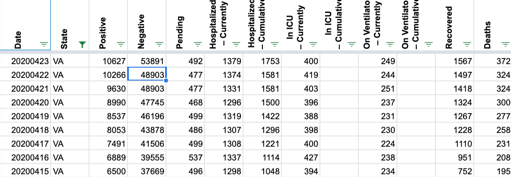
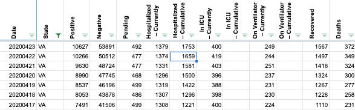
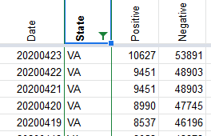
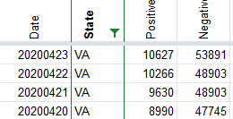

VA data for 4/21 and 4/22 needs update
Issue number 266
nhinze opened this issue on April 23, 2020 at 10:53 am
VA had some data reporting issues on 4/21 and 4/22. Data needs to be updated to the respective 6PM screenshots.
Comments
nhinze commented on April 24, 2020 at 10:02 am
Note that the “Negative”, “Total”, “Death” and “Hospitalization” columns for those dates is also incorrect.
goldfarb commented on April 24, 2020 at 10:58 am
Thank you @nhinze
We have made the updates here, and it will be reflected on the site soon.
Before 
After

astrowonk commented on April 27, 2020 at 2:01 pm
The Virginia Dept of Health’s CSV (recently switched to https and alas has some certificate validation issues on some clients) has:
2020-04-22 | 10266
2020-04-23 | 10998
2020-04-24 | 11594
2020-04-25 | 12366
Why are the totals here different from the state?
nhinze commented on April 27, 2020 at 4:46 pm
Actually, the numbers are all off starting 4/23 now compared to the screenshots.
Thanks for reporting this issue @nhinze
We will update the data based on the screenshots. https://covidtracking.com/screenshots/VA/VA-20200421-181818.png https://covidtracking.com/screenshots/VA/VA-20200422-181901.png
Before 
After 